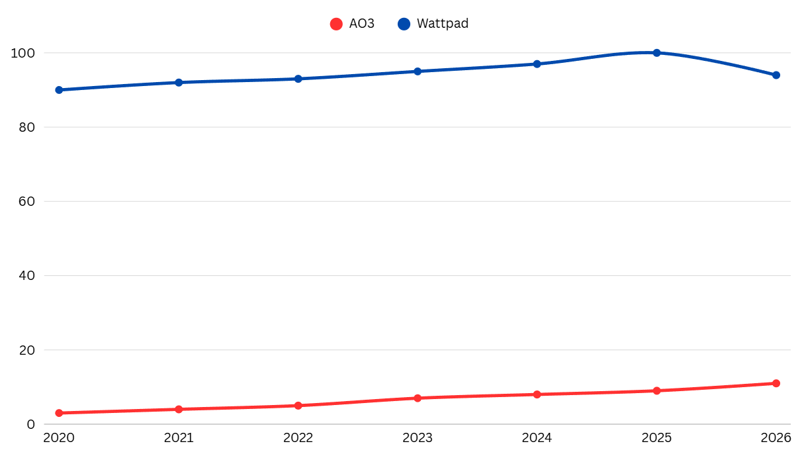

AO3 and the Great Wattpad Migration

Since the beginning of time, AO3 users and Wattpad users have been at odds, arguing which site is better. But recently, Wattpad committed an inexcusable crime that brought the Wattpad users over to the other side—mostly.
What Is Archive Of Our Own?
Archive Of Our Own, or AO3, is an archive website for people to share and store written fan works. That is to say, people write fanfiction on it, including me. It lets people interact with others from their fandoms and share ideas, stories, and headcanons of their favorite characters—it’s a great joy to use, and I virtually jump in joy whenever I get a new comment on one of my fics. But not everyone views it that way because of one main thing: censorship.
Lack of Censorship—its Greatest Strength or its Greatest Weakness?
AO3 is strictly anti-censorship, instead providing an extensive tagging system that lets its users filter out stuff they don’t want to read. In my opinion, this is a great way to go about things; everyone can read the type of story they want to read, all while knowing exactly what they’re getting themselves into. But some people say that even having “taboo” works on there is horrible and it all should be gone.
But think about this: people will still want to write and read about those things, whether it’s allowed or not. But if it isn’t allowed, they won’t be able to tag that the stuff is there, and therefore it will be much harder to avoid for people like me, who don’t want to read that stuff and actively filter it out. Banning anyone who tags their works with taboo topics will just lead to the quality of life of AO3 dropping exponentially. This won’t stop people from complaining, though.
The Other End of the Spectrum: Wattpad’s Censorship Went Too Far
Like AO3, Wattpad is another fanfic site. But unlike AO3, it’s not an archive—it’s also an app on the app store, and because of that, it has to follow the appstore’s censorship rules. That in and of itself isn’t a bad thing, but the way Wattpad went about outlining its rules left a lot to be desired.
I myself took a quick look at it, and… oooh boy it’s bad. It’s so vague that basically anything could get you banned without explanation, and from what I’ve heard, they don’t listen to appeals that much so there’s not really a way to get your account back either. If I used the site, I would be in constant fear of randomly getting banned.
The Great Wattpad Migration

Graph of the amount of AO3 users vs amount of Wattpad users over time
And clearly, I’m not the only one that felt this way about Wattpad’s change in rules; a large majority of its users shared my sentiment and decided to leave the site. But of course, they wanted to find an alternative—preferably, something with much much less censorship, since that’s what drove them away from Wattpad in the first place. And while there are other places they could go, like Fanfiction.net or Tumblr, AO3 is the most well-known and well-suited option for their needs.
So, this seems like a great thing on paper. A large group of new users are coming to AO3, so we’ll get so many more readers and fics to read. But the problem is, the user etiquette on Wattpad is vastly different from the etiquette on AO3, and because of the amount of new users who are flocking to a new place without someone to really show them the ropes, they will not be following all of the unspoken rules all veteran AO3 users follow. For example, they don’t understand how to tag fics properly, and they don’t know the rule of "Don't like, don’t read”. This is understandably very frustrating for everyone else on the site.
One more thing that has been happening recently is that the users that have come from Wattpad are deciding to report fics with taboo topics. That’s right, the users switched from Wattpad to AO3 because of censorship, and now they’re mad at AO3 for not having censorship. It’s ridiculous! They’re also going around writing hate comments on peoples’ works just because it contains things they don’t want to read… but AO3 doesn’t have an algorithm! The only way to come across fics like that is to actively search them up, but even if they somehow randomly came across them, they chose to ignore the tags clearly stating what the fic contained and then complained about it!
Closing
All of this to say, AO3’s lack of censorship is still a big source of contention for many, but I think we can all agree that no censorship is better than way too much, as seen by Wattpad’s tragic downfall.